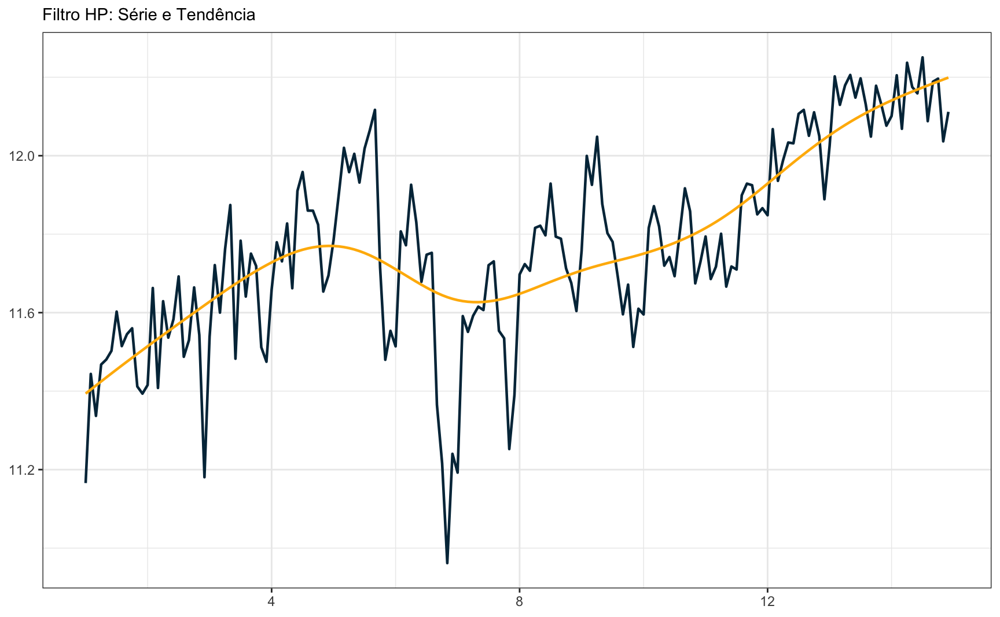
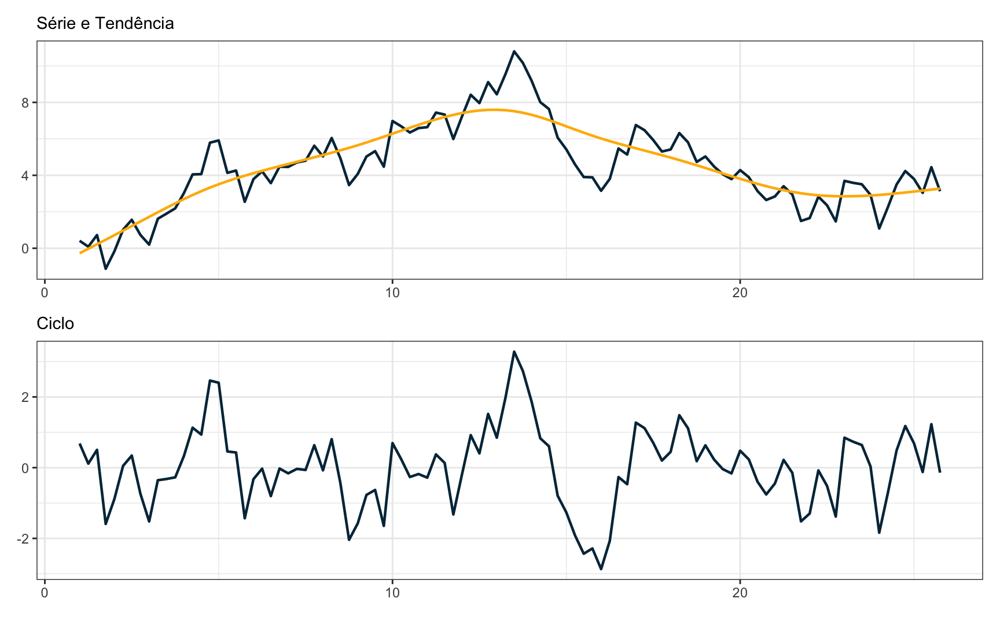
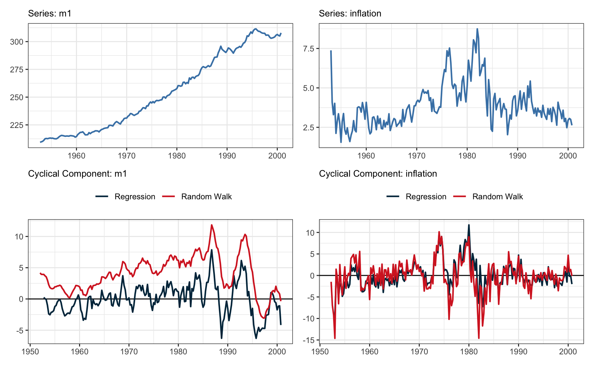

Code
ggplot(subcarros, aes(x = date, y = lcar)) +
geom_line(lwd = 0.8, color = "steelblue") +
labs(
subtitle = "Produção de automóveis e comerciais leves",
x = NULL,
y = "Unidades (log)",
caption = "Fonte: BCB") +
theme_bw()
Uma tarefa rotineira em pesquisa econômica é de encontrar tendências e ciclos em séries de tempo macroeconômicas. Dada uma série de tempo \(y_t\), tenta-se encontrar alguma decomposição que resulte em:
\[ y_t = \text{cycle}_t + \text{trend}_t + \text{remainder}_t \]
Diferentes teorias e abordagens foram levantadas para extair as tendências de curto e longo prazo de séries.
De maneira geral, há dois tipos de tendências: (1) tendências determinísticas e (2) tendências estocásticas. A forma mais simples de tendência determinística é de uma tendência temporal linear. Algo na forma
\[ y_t = \alpha_{0} + \alpha_{1}t + u_{t} \]
Naturalmente, também é possível propor polinômios de ordem mais elevada para modelar a tendência acima. Contudo, não é usual usar polinômios maiores do que de grau 3, isto é,
\[ y_t = \alpha_{0} + \alpha_{1}t + \alpha_{2}t^2 + \alpha_{3}t^3 + u_{t} \]
Já o exemplo mais simples de série com tendência estocástica é um random-walk
\[ y_t = y_{t-1} + u_{t} \]
A depender do tipo de série que se considera, pode fazer sentido remover diferenças em ordens específicas. Na modelagem SARIMA, por exemplo, tira-se “diferenças sazonais”. No caso de uma série trimestral, por exemplo, pode fazer sentido tirar uma diferença trimestral
\[ z_{t} = y_{t} - y_{t-4} \]
O gráfico abaixo mostra a produção de automóveis no Brasil entre 1993 e 2007. Os dados são da Anfavea e baixados no R via API do Banco Central. A série não foi ajustada sazonalmente.
ggplot(subcarros, aes(x = date, y = lcar)) +
geom_line(lwd = 0.8, color = "steelblue") +
labs(
subtitle = "Produção de automóveis e comerciais leves",
x = NULL,
y = "Unidades (log)",
caption = "Fonte: BCB") +
theme_bw()
O painel abaixo mostra as séries sem tendência e o gráfico de autocorrelação do resíduo do ajuste. Note que é possível perceber visualmente a presença de uma componente sazonal que permanece na série. Os resíduos do ajuste com polinômio de terceiro grau ainda apresentam bastante autocorrelação, sugerindo que a série não é tendência-estacionária. O ajuste na primeira diferença parece ser mais adequado neste caso.
p1 <- ggplot(subcarros, aes(x = date, y = resid_tt)) +
geom_line(lwd = 0.8, color = "steelblue") +
geom_hline(yintercept = 0) +
labs(x = NULL, title = "Tendência cúbica") +
scale_y_continuous(limits = c(-0.5, 0.5)) +
theme_bw()
p2 <- ggplot(subcarros, aes(x = date, y = resid_sto)) +
geom_line(lwd = 0.8, color = "steelblue") +
geom_hline(yintercept = 0) +
scale_y_continuous(limits = c(-0.5, 0.5)) +
labs(x = NULL, title = "Tendência estocástica I(1)") +
theme_bw()
p3 <- ggAcf(ts(subcarros$resid_tt, frequency = 12), lag.max = 84) +
ggtitle("ACF: resíduos tendência cúbica") +
scale_y_continuous(limits = c(-0.5, 0.5)) +
theme_bw()
p4 <- ggAcf(ts(subcarros$resid_sto, frequency = 12), lag.max = 84) +
ggtitle("ACF: resíduos tendência I(1)") +
scale_y_continuous(limits = c(-0.5, 0.5)) +
theme_bw()
(p1 + p2) / (p3 + p4)Uma abordagem bastante comum para encontrar a tendência/ciclo em séries macroeconômicas é o filtro Hodrick-Prescott (HP). O filtro HP separa uma série em suas componentes de tendência e ciclo. Sua formulação matemática baseia-se na minimização de uma função objetivo que busca encontrar uma estimativa suave da tendência subjacente, ao mesmo tempo em que penaliza variações abruptas.
Dada uma série temporal \(y_t\), o objetivo é encontrar uma tendência \(g_t\) que minimize a seguinte função objetivo:
\[ \min_{g_t} \left[ \sum_{t=1}^{T} \left( y_t - g_t \right)^2 + \lambda \sum_{t=2}^{T-1} \left( g_{t+1} - 2g_t + g_{t-1} \right)^2 \right] \]
O primeiro termo representa a soma dos quadrados dos resíduos entre a série observada e a estimativa da tendência, enquanto o segundo termo é uma penalidade que desencoraja variações abruptas na tendência. O filtro HP suaviza a série observada, permitindo identificar movimentos de longo prazo enquanto remove flutuações de curto prazo. O parâmetro \(\lambda\) desempenha um papel crucial na determinação do nível de suavização da tendência, com valores maiores resultando em tendências mais suaves.
Note que se \(\lambda = 0\) o valor ótimo de \(g_{t}\) é simplesmente \(y_{t}\). Quando \(\lambda \to \infty\) o componente \(g_{t}\) se aproxima de uma tendência temporal linear. A escolha de \(\lambda\) não é simples e é usual amparar-se em regras de bolso. Para séries trimestrais, costuma-se usar \(\lambda = 1600\); para séries mensais \(\lambda = 14400\)1.
Apesar de ter sido desenvolvida para séries macroeconômicas, não há problema, em princípio, em aplicar o filtro HP a qualquer tipo de série. O gráfico abaixo mostra o resultado da aplicação do filtro HP à série de produção de veículos.
y <- ts(log(subcarros$value), frequency = 12)
hpy <- hpfilter(y, freq = 14400, type = "lambda")
tbl_hp <- tibble(
date = as.numeric(time(y)),
trend = as.numeric(hpy$trend),
series = as.numeric(y)
)
ggplot(tbl_hp, aes(x = date)) +
geom_line(aes(y = series), lwd = 0.8, color = "#023047") +
geom_line(aes(y = trend), lwd = 0.8, color = "#ffb703") +
labs(subtitle = "Filtro HP: Série e Tendência", x = NULL, y = NULL) +
theme_bw()
O passeio aleatório é um processo estocástico comum em economia. Variáveis importantes como preços futuros, preços de ações, preços de petróleo, conusmo, inflação, e a taxa de crescimento do estoque de moeda podem ser modeladas como passeios aleatórios.
Seja um passeio aleatório \((1-L)y_{t} = u_{t}\) com \(T\) observações e frequência trimestral, onde \(L\) é o operador defasagem usual: \(Lx_{t} = x_{t-1}\). Segundo Hamilton (2017), Quando se aplica o filtro HP sobre \(y_{t}\) encontra-se o seguinte termo de ciclo, \(c_t\)
\[ c_{t} = \frac{\lambda(1-L)^3}{F(L)}u_{t+2} \]
Usando \(\lambda = 1600\), a sugestão usual para séries trimestrais,
\[ c_t = 89.72 \{ - q_{0,t+2} + \sum^{\infty}_{j=0} (0.8941)^j[\cos(0.1117j)+8.916\sin(0.1117j)](q_{1,t+2-j} + q_{2,t+2+j}) \} \]
onde
\(q_{0t} = \varepsilon_t - 3\varepsilon_{t-1} + 3\varepsilon_{t-2} - \varepsilon_{t-3}\)
\(q_{1t} = \varepsilon_t - 3.79\varepsilon_{t-1} + 5.37\varepsilon_{t-2} - 3.37\varepsilon_{t-3} + 0.79\varepsilon_{t-4}\)
\(q_{2t} = -0.79\varepsilon_{t+1} + 3.37\varepsilon_t - 5.37\varepsilon_{t-1} + 3.79\varepsilon_{t-2} - \varepsilon_{t-3}\)
que é uma expressão bastante longa. O importante a se notar é que o termo \(c_{t}\) tem uma estrutura recursiva em função das defasagens de \(\varepsilon_t\). Note que a série subjacente é simplesmente uma soma de ruídos aleatórios sem nenhum padrão:
\[ \begin{align} (1-L)y_{t} & = \varepsilon_{t} \\ y_{t} & = \frac{\varepsilon_{t}}{(1-L)} \\ y_{t} & = \sum_{i = 0}^{\infty}e_{i} \end{align} \]
mas o ciclo desta série tem uma estrutura artifical, que foi acrescentada pelo uso do filtro HP. Em linhas gerais, a exposição acima resume o argumento de Hamilton contra o uso indiscriminado do filtro HP em séries macroeconômicas não-estacionárias. O filtro HP acaba “criando” uma estrutura nos dados que não existia previamente.
set.seed(1984)
y <- ts(cumsum(rnorm(100)), frequency = 4)
hpy <- hpfilter(y, freq = 1600, type = "lambda")
tbl_hp <- tibble(
date = as.numeric(time(y)),
cycle = as.numeric(hpy$cycle),
trend = as.numeric(hpy$trend),
series = as.numeric(y)
)
p1 <- ggplot(tbl_hp, aes(x = date)) +
geom_line(aes(y = series), lwd = 0.8, color = "#023047") +
geom_line(aes(y = trend), lwd = 0.8, color = "#ffb703") +
labs("Filtro HP aplicado no Random Walk", subtitle = "Série e Tendência", x = NULL, y = NULL) +
theme_bw()
p2 <- ggplot(tbl_hp, aes(x = date)) +
geom_line(aes(y = cycle), lwd = 0.8, color = "#023047") +
labs(x = NULL, y = NULL, subtitle = "Ciclo") +
theme_bw()
p1 / p2
Para um exemplo mais aplicado, vamos usar a base USMacroG do pacote {AER}. O código abaixo aplica o filtro HP sobre o logaritmo das séries trimestrais do PIB, consumo, investimento e M1. As séries são todas completas com 204 observações entre 1950 e 2000.
O gráfico mostra o ajuste do filtro HP em cada uma das quatro séries.
library(AER)
data("USMacroG")
macro <- tibble(
date = zoo::as.Date.ts(USMacroG),
as.data.frame(USMacroG)
)
macro <- macro |>
mutate(across(gdp:m1, log))
nest_macro <- macro |>
select(date, gdp, consumption, invest, m1) |>
pivot_longer(col = -date, names_to = "name_series") |>
group_by(name_series) |>
nest()
macro_hp <- nest_macro |>
mutate(hpy = map(data, \(x) {
y <- ts(x$value, frequency = 4, start = c(1950, 1))
hp <- hpfilter(y, freq = 1600, type = "lambda")
tibble(
cycle = as.numeric(hp$cycle),
trend = as.numeric(hp$trend)
)
})) |>
unnest(c(data, hpy)) |>
ungroup()
p1 <- ggplot(macro_hp, aes(x = date, y = value)) +
geom_line(aes(y = value), lwd = 0.8, color = "#023047") +
geom_line(aes(y = trend), lwd = 0.8, color = "#ffb703") +
facet_wrap(~name_series, scales = "free_y", ncol = 1) +
labs(x = NULL, y = NULL)+
theme_bw()
p2 <- ggplot(macro_hp, aes(x = date, y = cycle)) +
geom_line(lwd = 0.8, color = "#023047") +
geom_hline(yintercept = 0) +
facet_wrap(~name_series, ncol = 1) +
labs(x = NULL, y = NULL) +
theme_bw()
p1 + p2
A análise das autocorrelações mostra que há bastante autocorrelação cruzada entre as séries.
macro_detrend <- macro_hp |>
mutate(detrend = value - trend) |>
pivot_wider(id_cols = "date", names_from = "name_series", values_from = "detrend") |>
select(-date)
ggAcf(ts(macro_detrend, frequency = 4), lag.max = 28) +
ggtitle("ACF: séries com filtro HP") +
theme_bw()
Se tivéssemos assumido, contudo, que as séries são I(1), não haveria muita correlação cruzada entre as séries.
macro_d1 <- macro |>
select(gdp, consumption, invest, m1) |>
mutate(across(everything(), ~c(NA, diff(.x))))
ggAcf(ts(macro_d1, frequency = 4), lag.max = 28) +
ggtitle("ACF: primeira diferença das séries") +
theme_bw()Como alternativa ao filtro HP Hamilton (2017) sugere um procedimento bastante simples. Seja \(y_t\) uma série não-estacionária. Então fazemos uma regressão linear de \(y_{t+h}\) contra os \(p\) valores mais recentes.
\[ y_{t+h} = \beta_0 + \beta_{1} y_{t} + \beta_{2} y_{t-1} + \beta_{3} y_{t-2} + \beta_{4} y_{t-3} + u_{t+h} \]
Para o caso específico de dados trimestrais, ele sugere uma formulação do tipo:
\[ y_{t} = \beta_0 + \beta_{1} y_{t-8} + \beta_{2} y_{t-9} + \beta_{3} y_{t-10} + \beta_{4} y_{t-11} + u_{t+h} \]
Ou, alternativamente, um modelo ainda mais simples, em função apenas de \(y_{t-8}\) na forma:
\[ y_{t} = \beta_0 + \beta_{1} y_{t-8} + u_{t+h} \]
De modo geral, Hamilton argumenta que este filtro garante a estacionaridade de séries, sendo elas tendência-estacionárias ou diferença-estacionárias. Mais detalhes sobre o filtro podem ser verificados no Working Paper.
O primeiro passo necessário é preparar os dados. Novamente, vamos trabalhar com as séries num padrão retangular, usando um tibble. A base de dados utilizada é a USMacroG, descrita acima; neste caso, vamos adicionar as séries de gasto do governo e inflação. Isto é, temos agora seis séries: PIB, consumo, investimento, gasto do governo, inflação e M1. Todas as variáveis, exceto pela taxa de inflação, serão transformadas usando log, seguindo o paper de Hamilton.
O código abaixo tem um trecho interessante onde se usa uma combinação de map e partial para criar várias colunas com os valores defasados das variáveis.
data(USMacroG)
macro <- tibble(
date = zoo::as.Date.ts(USMacroG),
as.data.frame(USMacroG)
)
macro_long <- macro |>
select(date, gdp, consumption, invest, m1, government, inflation) |>
mutate(across(gdp:government, ~log10(.x) * 100)) |>
pivot_longer(-date, names_to = "name_series")
macro_lags <- macro_long |>
group_by(name_series) |>
mutate(
across(value,
map(1:12, ~partial(dplyr::lag, n = .x)),
.names = "l{.fn}")
)Hamilton sugere duas maneiras de tirar a tendência dos dados: usando uma regressão linear e tirando uma diferença simples. No caso de séries trimestrais, o autor sugere \(p=4\) e \(h=8\). Assim, temos de estimar um modelo linear da forma:
\[ y_{t} = \beta_0 + \beta_{1} y_{t-8} + \beta_{2} y_{t-9} + \beta_{3} y_{t-10} + \beta_{4} y_{t-11} + u_{t+h} \]
E a série livre de tendência, \(z_t\) será dada por:
\[ z_{t} = y_{t} - \hat{\beta_0} - \hat{\beta_1}y_{t-8} - \hat{\beta_2}y_{t-9} - \hat{\beta_3}y_{t-10} - \hat{\beta_4}y_{t-11} \]
No segundo “modelo”, vamos simplesmente tirar uma diferença na forma:
\[ z_{t} = y_{t} - y_{t-8} \]
O primeiro modelo será chamado de “regression”, enquanto o segundo modelo será chamado de “Random Walk”. O código abaixo faz a regressão em todas as séries e grava os resultados do fit e os resíduos de todos os modelos.
macro_models <- macro_lags |>
mutate(resid_rw = value - l8) |>
nest() |>
mutate(
model_reg = map(data, \(d) lm(value ~ l8 + l9 + l10 + l11, data = d)),
trend = map(model_reg, fitted),
resid = map(model_reg, residuals)
)Idealmente, deve-se verificar o comportamento dos resíduos do modelo de regressão. Neste caso, estes resíduos são considerados o componente cíclico da série original. O painel abaixo mostra os resíduos da primeira série, do PIB. O gráfico de cima é simplesmente o gráfico do resíduo. No gráfico inferior-esquerdo temos o gráfico de autocorrelação da série e no gráfico inferior-direito temos o historgrama dos resíduos com a densidade da distribuição normal superimposta.
Vale lembrar que não estamos buscando limpar a série totalmente de autocorrelação, como na modelagem ARIMA.
Ljung-Box test
data: Residuals
Q* = 417.09, df = 10, p-value < 2.2e-16
Model df: 0. Total lags used: 10NULLEvidentemente, não é fácil inspecionar os resíduos de todos os modelos, especialmente quando o número de séries é muito grande. O painel abaixo mostra o gráfico de autocorrelação entre as seis séries consideradas. Na diagonal principal temos o gráfico do resíduo da própria série; nos demais gráficos, mostra-se a autocorrelação cruzada entre os resíduos.
O código abaixo junta todas as séries para facilitar a sua visualização. Como há várias séries e muita repetição, crio uma função plot_series para facilitar a construção dos painéis.
m1 <- macro_models |>
ungroup() |>
select(name_series, trend, resid) |>
unnest(cols = c("trend", "resid")) |>
mutate(id = as.numeric(names(trend)), .before = everything())
macro_trend <- macro_models |>
select(name_series, data) |>
unnest(cols = c(data)) |>
mutate(id = vctrs::vec_group_id(date), .before = everything()) |>
ungroup()
macro_trend <- macro_trend |>
left_join(m1, by = c("id", "name_series"))
series_trend <- macro_trend |>
select(date, name_series, trend, resid, resid_rw) |>
pivot_longer(cols = -c(date, name_series), names_to = "name_decomp") |>
mutate(decomp = if_else(str_detect(name_decomp, "trend"), "trend", "resid")) |>
filter(!is.na(value))
plot_series <- function(x, ylim = c(NA, NA)) {
p1 <- ggplot() +
geom_line(
data = dplyr::filter(series_trend, name_series == x, decomp == "trend"),
aes(x = date, y = value),
lwd = 0.8,
color = "steelblue"
) +
labs(x = NULL, y = NULL) +
ggtitle(glue::glue("Series: {x}")) +
theme_bw() +
theme(plot.title = element_text(size = 10))
p2 <- ggplot() +
geom_hline(yintercept = 0) +
geom_line(
data = dplyr::filter(series_trend, name_series == x, decomp == "resid"),
aes(x = date, y = value, color = name_decomp),
lwd = 0.8
) +
scale_x_date(
breaks = seq(as.Date("1950-01-01"), as.Date("2000-01-01"), by = "10 year"),
date_labels = "%Y"
) +
scale_y_continuous(limits = ylim) +
scale_color_manual(
name = "",
values = c("#003049", "#d62828"),
labels = c("Regression", "Random Walk")) +
labs(x = NULL, y = NULL) +
ggtitle(glue::glue("Cyclical Component: {x}")) +
theme_bw() +
theme(legend.position = "top", plot.title = element_text(size = 10))
return(list(trend = p1, cycle = p2))
}O gráfico abaixo mostra o ajuste do filtro de Hamilton nas séries de PIB e de consumo.
O gráfico abaixo mostra o ajuste do filtro de Hamilton nas séries de investimento e gasto do governo.
Finalmente, o gráfico abaixo mostra o ajuste do filtro de Hamilton nas séries de M1 e de inflação.

O filtro proposto por Hamilton tem diversas características interessantes. A simplicidade e intuição do filtro, em especial, são pontos atrativos. Um paper recente, de Viv Hall e Peter Thompson (2021), contudo, não encontrou grandes vantagens deste filtro em relação aos tradicionais filtro HP e filtro Baxter-King. Os autores testam os filtros usando um amplo conjunto de séries macroeconômicas da Nova Zelândia. De maneira geral, o filtro de Hamilton gerou séries com maior volatilidade e pior capacidade preditiva. Considerando a literatura de filtros, parece improvável, de fato, que um filtro tão simples possa ter uma melhor performance do que filtros no domínio da frequência.
Para uma discussão sobre a escolha de \(\lambda\) em séries macroeconômicas, veja Ravn e Uhlig (2002)↩︎